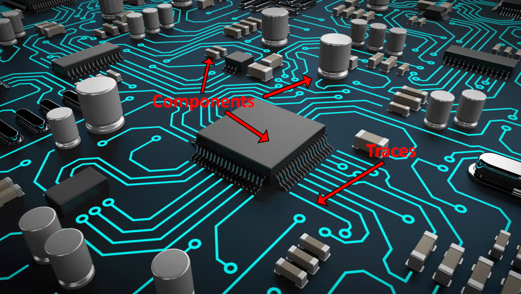

PCB Design & Fabrication
PCB is an abbreviation for printed circuit board. They are the most important part of any functioning electronic device. They mainly support and connect various electronic components such as microcontrollers, resistors, capacitors and many other parts using traces. Above, you can see a model of what the components and traces look like.
In this modules, we were taught how to design and fabricate our own pcb from scratch using software such as EAGLE, and hardware such as a CNC machine.
PCB Fabrication [ISP Board]


To get started, I first had to fabricate an ISP board to allow me to programme other boards. As shown above, I was provided with the files for both the traces and outline for the pcb board as shown above.
Next, I used a programme provided by our lecturer called Mods. Which provides a method to convert a png image (such as the one shown previously) into a Gcode that a CNC machine will be able to read.
Following that, I selected a server programme under G-code called "mill 2D PCB png". I uploaded the png files provided to me, selected 'mill traces' and input the settings recommended to me by the lecturer. The only important consideration that I had to make is to decide the value of the Offset. Basically, the the offset value represents how many times the milling machine cut the traces, therefore, the higher the offset value, the more rounds the milling machine will cut, the thinner the traces. It is always faster to cut the traces with the offset of 1, but sometimes I will cut with higher offsets as it makes soldering easier since there is more space in between the traces and pads, preventing me from soldering the traces together causing a short-circuit. Finally, I clicked on 'calculate' to get the Gcode generated.
I repeated the process for the outline too, remembering to switch to 'mill outline' and changing the settings accordingly. Outline in this case will always be 1, as it would be enough to cut the PCB out of the copper sheet. With all that done, I clicked on 'calculate' for the outline Gcode and I was ready to move on to the next step, setting up the milling machine.
The first step is to get what is known as a copper blank. It is an insulator with a layer of copper on the top. I applied double-sided tape to the back of the blank and stuck it to the surface of the CNC machine while further using masking tape to ensure it is secured well. This is to prevent the copper blank from slipping during milling.
Above is the User-Interface for the stepcraft CNC milling machine. All that I need to do is to upload the Gcode file, then click "HOME ALL", followed by setting zero for the x and y axis (ideally as close to the bottom-right corner of the copper clad to save material).
Fortunately for me, the FabLab has a sensor to help as set the zero point for the z-axis very easily. I just position the probe provided under the drill, check from two different angles to ensure that it is aligned well, then click the icon on the right shown above. The drill will then slowly lower itself down until it 'clicks' the probe and sets the zero point automatically.
Now, I can switch the drill on and click on "CYCLE START" and monitor the machine as it mills. In the event that anything goes wrong, I can click on "CYCLE STOP" and adjust anything if needed and continue cutting. If its an emergency, there is also a red emergency stop button I could activate. The good news is that I never needed to use that button.
While the milling is in progress, there will be copper chips (looks like powder) produced which may obstruct the cutter, while it usually would not affect the cutting, too much of it may cause the chips to fly out, making a mess and also obstruct my view of the cutting. This is problematic as it is important to check if the cutting is correct (not cutting too deep, drill bit is not broken). To solve this, there is a vacuum nearby that allows me to clean the board as it is being milled.
After milling, I removed the 'dead copper' to prevent issues when inserting it into the usb port of a computer. Not all dead copper has to be removed, only those that may cause short-circuits (such as the excess copper near the usb adapter). I soldered all the smd components with the help of a tweezer since they (especially the capacitors) are very small. One tip I have been given by Mr Chew, my lecturer, is to rest my arms and wrists on the table as much as possible to reduce shaking. Next, I used a multimeter to check for shorts/unconnected components. This was an important step as I might damage my components if the ISP board is shorted, and after checking, I realised that some components had weak connections (not soldered well) so I resoldered them.
Finally, the last few steps before I can use my ISP board to programme other boards. I followed a set of instructions provided to me to programme my board using an ISP board that has already been programmed by my lecturer. I connected the programming pins to each other and plugged my instructors ISP board into my computer
Last but not least, I installed the fts firmware and used the "make -v" command to generate a hex file. Then, I downloaded Zadig to install the driver in my ISP and used the commands "make flash" and "make fuses" to finish the setup. Now, I plug my own ISP programmer directly into my laptop and check if device manager recognises it
Now, I plug my own ISP programmer directly into my laptop and check if Device Manager recognises it. As you can see above, my computer recognises my ISP board! This means it is working and I can blow the reset fuse using the "rstdisbl" command. With this, my ISP board can be used to programme other boards and is finally done!
PCB Design
Designing a PCB has two main steps, designing the schematic, and designing the board itself. The schematic is basically an electronic diagram that shows how all the electronic components are connected. Whereas the board design is the physical layout of how the board will actually look like along with how thin the traces should be and how the traces connect the components. I was tasked with creating a "hello board" that has leds and a button. If done correctly, I should be able to programme it with the ISP board above to do simple functions such as a blink programme.